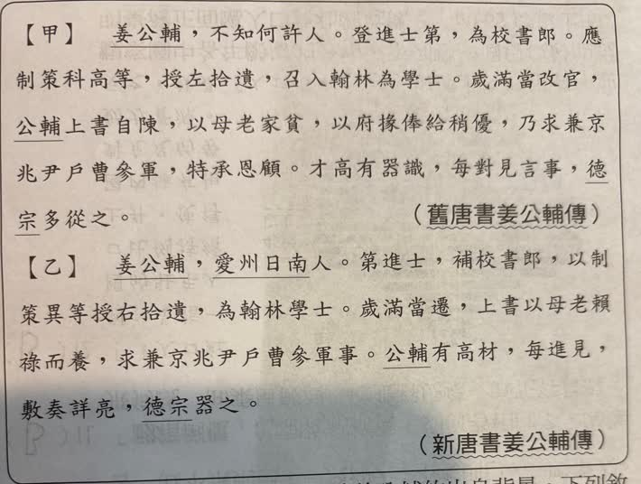
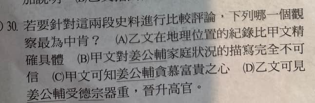

分享原卷｜第30題
完整原題
作答所需文章／材料
【甲】 姜公輔，不知何許人。登進士第，為校書郎。應制策科高等，授左拾遺，召入翰林為學士。歲滿當改官，公輔上書自陳，以母老家貧，以府掾俸給稍優，乃求兼京兆尹戶曹參軍，特承恩顧。才高有器識，每對見言事，德宗多從之。 ——《舊唐書・姜公輔傳》 【乙】 姜公輔，愛州日南人。第進士，補校書郎，以制策異等授右拾遺，為翰林學士。歲滿當遷，上書以母老賴祿而養，求兼京兆尹戶曹參軍事。公輔有高材，每進見，敷奏詳亮，德宗器之。 ——《新唐書・姜公輔傳》先想一想，再查看答案、解說與原圖
逐項解析
| 選項與原句 | 判讀 | 句意與判斷理由 |
|---|---|---|
| (A) 乙文在地理位置的紀錄比甲文精確且具體 | 應選 | 乙具體列出愛州日南，甲僅不知何許，直接支持記錄較具體。 |
| (B) 甲文對姜公輔家庭狀況的描寫完全不可信 | 不選 | 兩文家庭背景可相容，沒有完全不可信的依據。 |
| (C) 甲文可知姜公輔貪慕富貴之心 | 不選 | 求兼官以養老母，不足以判為貪慕富貴。 |
| (D) 乙文可見姜公輔受德宗器重，晉升高官 | 不選 | 受器重有據，但晉升高官的結果及因果沒有在這段明寫，加入過多推論。 |
詳細說明與解題步驟
【甲文完整白話】
姜公輔，這篇未詳載他是哪裡人。他考中進士，擔任校書郎；參加制策科考試成績優異，獲授左拾遺，並被召入翰林當學士。
任期滿、應當改任官職時，他上書說明母親年老、家境貧窮，而官府屬官的俸給稍好，便請求兼任京兆尹戶曹參軍，特別得到皇帝眷顧。他才華高、識見好，每次面見皇帝議論政事，德宗多半採納。
【乙文完整白話】
姜公輔是愛州日南人，考中進士，補任校書郎；因制策考試成績優異，獲授右拾遺，擔任翰林學士。
任期滿、將要遷任時，他上書說母親年老，要靠俸祿奉養，請求兼任京兆尹戶曹參軍事。他才華出眾，每次進見，陳述奏議都詳盡明白，德宗很器重他。
【重要字詞及兩文記載】
何許是什麼地方；不知何許人是作者未載明籍貫，不是姜公輔本人不知道自己哪裡出生。登進士第、 第進士都是考中進士。
府掾是官府屬官，俸給是官員薪俸；賴祿而養是依靠俸祿奉養母親；敷奏詳亮是陳述奏議詳盡、清楚；器之是器重他。
原卷甲寫左拾遺，乙寫右拾遺，依各自原文保留，不為了讓兩文一致而擅改。歲滿當遷是應當遷任的敘述，不等於已經記載他因受器重而晉升高官。
【比較要看明文支持，不能先加價值判斷】
A：乙有愛州日南的具體籍貫，甲沒有載明，乙在這項地理資訊更精確、具體，評論有根據。
B：甲說母老家貧，乙說母老賴祿而養，詳略不同卻能相互對應，沒有理由因此斷言甲的家庭狀況完全不可信。
C：為奉養年老母親而求兼薪俸較好的官職，不等於貪慕富貴；不能把尋求俸給一律推成貪念。
D：乙確有德宗器之，支持受器重；但沒有明寫因此晉升高官的結果。前面的任官記載也不能任意與後面的器重串成未明示的因果。A對資料詳略的比較較準確。
史料省略某細節，不代表否定另一篇記載；比較時先分清有寫、沒寫、可推論與過度推論。
核對註記：已依原卷或完整文字核對並獨立解題；對應教材課次未確認，歸綜合。
原圖（僅本題）

